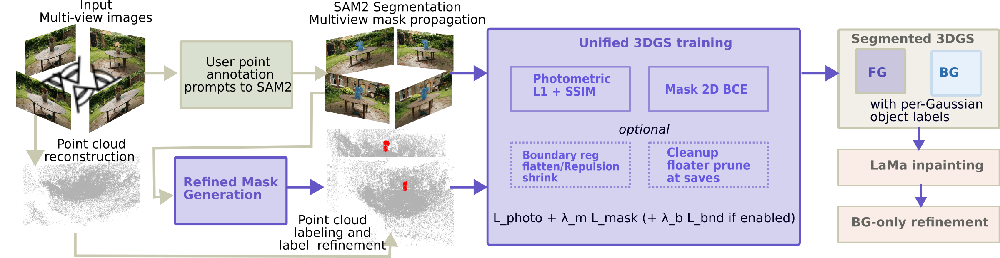
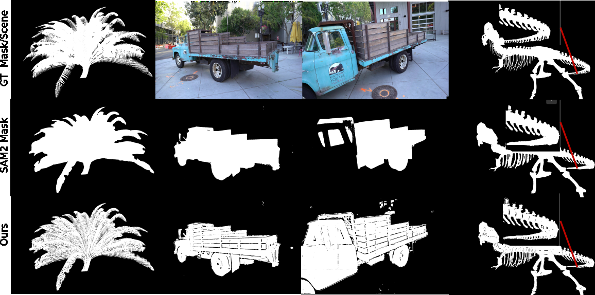
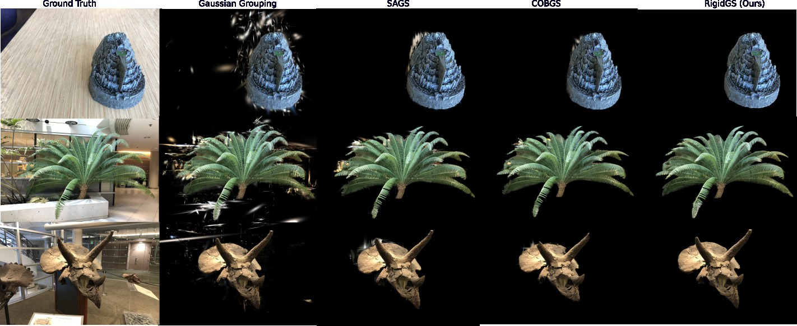
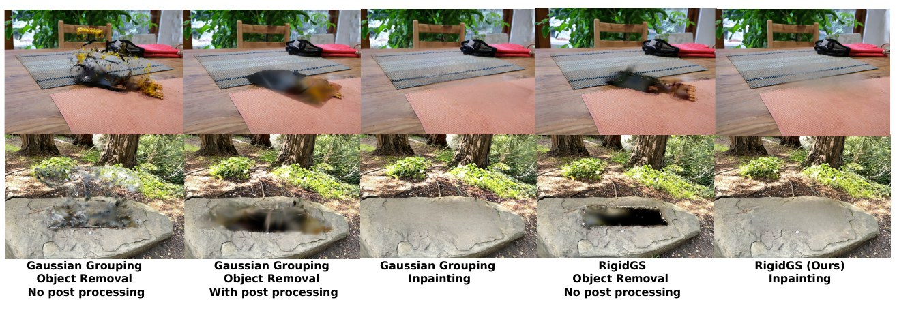

Geometry-Aware Object Decoupling for Rigid-Body Interaction in 3D Gaussian Splatting
Secure Sensing and Learning Research Lab
University of Wyoming, Laramie, WY, USA
Interactive VR/MR applications demand photorealistic 3D representations that support real-time rendering and object-level manipulation. While 3D Gaussian Splatting (3DGS) achieves high rendering quality, it represents scenes as unstructured, monolithic primitives. Existing object-aware 3DGS methods jointly optimize geometry and semantic states but suffer from two key failure modes: noisy foundation-model masks on complex geometry, and label–geometry coupling, in which co-optimized identity gradients mislabel boundary Gaussians.
We introduce RigidGS, an end-to-end pipeline that decouples geometric learning from object identity. We propose a depth- and temporally-aware mask refinement module that addresses two complementary SAM2 failures: over-inclusion on thin structures and under-inclusion on multimodal-depth objects. We then determine object identities entirely upstream via COLMAP projection voting and freeze them during training, directing mask supervision solely toward geometric optimization. Refined masks alone substantially improve competing methods, yet a residual gap in label–geometry coupling persists that our fixed-identity design eliminates.
RigidGS outperforms prior object-aware 3DGS methods on LLFF/NVOS, Mip-NeRF 360, and iNeRF360, improving segmentation and boundary IoU by 7.7 and 14.5 points on LLFF/NVOS. Finally, RigidGS enables real-time rigid-body manipulation on Meta Quest 2 without mesh extraction.
01

SAM2 swallows background between thin parts, such as the gaps between fern fronds. It also drops parts of an object that sit at a second depth, such as a truck's bed behind its cab. Refined masks from neighbouring frames are warped in by optical flow. Where SAM2 disagrees with them, SAM2 is re-prompted with points inside a Depth-Anything depth band. A grid of local depth thresholds then removes leftover background.
Each COLMAP point takes the label most of its views agree on. A k-NN pass then relabels isolated stragglers. These integer labels are never exposed to a gradient: cloned and split Gaussians inherit them, and pruned Gaussians take theirs with them.
A rendered-mask BCE against the refined masks moves, shrinks or fades misplaced Gaussians; it cannot change their label. At the 3D interface between objects, flattening, shrinkage and repulsion terms stop Gaussians of different objects from interpenetrating.
Each 3D point x, seen in views 𝒱(x), is labelled by a majority vote over the refined masks (label 0 is background):
Training runs in two stages. Stage 1 fits the scene for 30,000 iterations with these labels held fixed. The foreground is then hidden and SAM2 propagates the exposed hole across views. LaMa inpaints it, and 5,000 more iterations refine only the background Gaussians.

02
Gaussian Grouping and SAGA fragment thin structures, and COB-GS keeps background drift on multi-depth objects. RigidGS extracts each object cleanly.

03
Every object in a scene gets its own fixed label, so one training run separates them all. On the LERF scenes, Gaussian Grouping's extraction carries floaters across the table, while RigidGS keeps only the objects.
04
Because labels are fixed, an obvious worry is what happens when the initial vote is wrong. Flipping a sizeable share of the initial point labels barely changes the result: the mask loss fades mislabelled Gaussians within one densification cycle, and opacity pruning then removes almost all of them.
Letting the labels learn instead hurts most on objects with parts at several depths, such as trex's ribs and tail, which pull boundary Gaussians toward inconsistent labels.
05

06
Each segmented object is exported as its own group of Gaussians with a physics collider. Grabbing, dragging and dropping apply one rigid transform to the whole group on a Meta Quest 2, with no mesh extraction, deformation field or retraining.
@article{gyreyiri2026rigidgs,
title = {RigidGS: Geometry-Aware Object Decoupling for
Rigid-Body Interaction in 3D Gaussian Splatting},
author = {Gyreyiri, Paul Sansah and Shukla, Diksha},
journal = {arXiv preprint arXiv:2611.10199},
year = {2026}
}